Pattern-9 Tree Depth First Search
1、introduction
深度遍历，树的一种遍历方式，在遍历过程中用递归或栈记录所有父节点
2、binary tree path sum
给定二叉树和数S，判断是否有从根到叶子的路径，使得此路径所有节点的和等于S
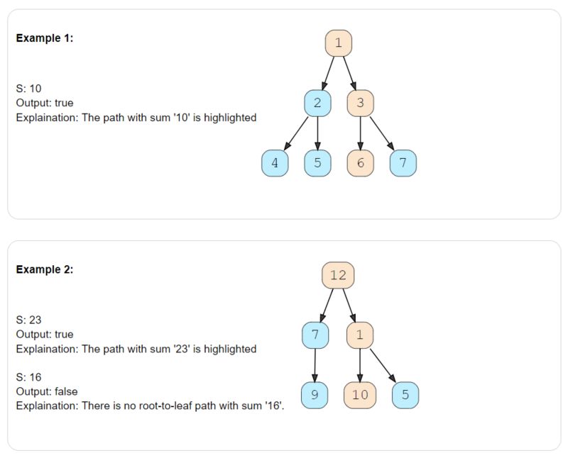
code:
bool hasPath(TreeNode *root, int sum) {
if (root == NULL) {
return false;
}
if (root->val == sum && root->left == NULL && root->right == NULL) {
return true;
}
return hasPath(root->left, sum - root->val) ||
hasPath(root->right, sum - root->val);
}
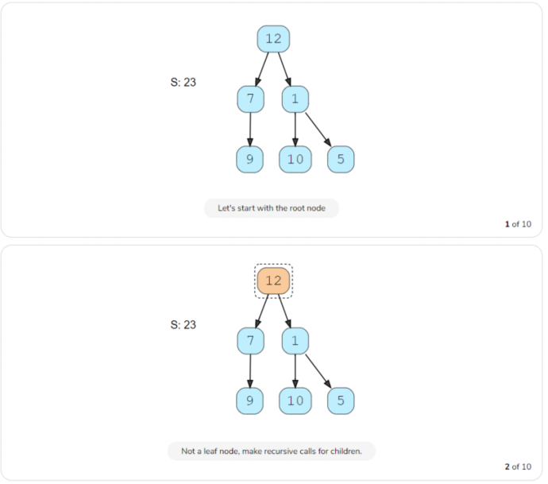
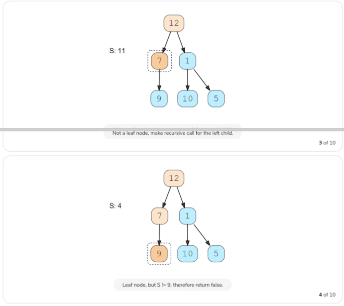
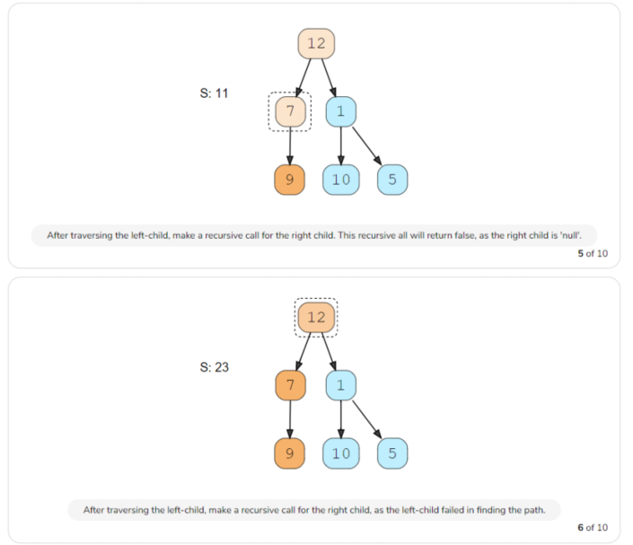
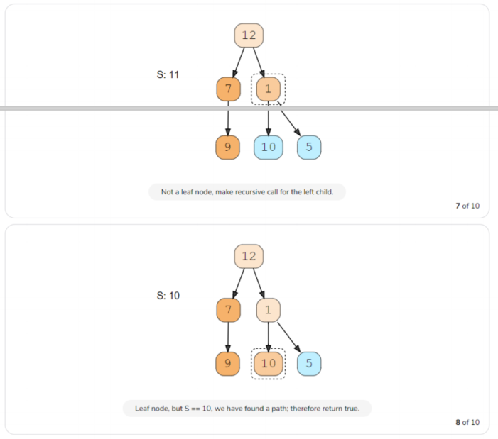
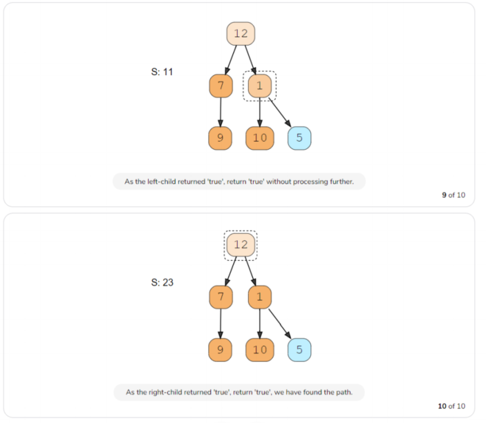
Time Complexity : O(N)
Space Complexity : O(N)
3、all Paths for a sum
给定二叉树和数S，求所有从根到叶子的路径，路径所有节点的和等于S
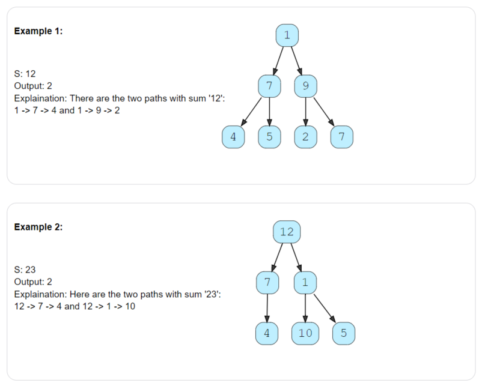
code:
void findPathRecursive(TreeNode *currentNode, int sum,
vector<int> ¤tPath, vector<vector<int>> &allPaths) {
if (currentNode == NULL) {
return;
}
currentPath.push_back(currentNode->val);
if (currentNode->val == sum && currentNode->left == NULL && currentNode->right == NULL) {
allPaths.push_back(vector<int>(currentPath));
} else {
findPathRecursive(currentNode->left, sum - currentNode->val, currentPath, allPaths);
findPathRecursive(currentNode->right, sum - currentNode->val, currentPath, allPaths);
}
//为了回溯,删除currentNode
currentPath.pop_back();
}
vector<vector<int>> findPaths(TreeNode *root, int sum) {
vector<vector<int>> allPaths;
vector<int> currentPath;
findPathRecursive(root, sum, currentPath, allPaths);
return allPaths;
}
Time Complexity : O(N^2)
Space Complexity : O(N logN)
相似问题1：
求所有根到叶子的路径
void findAllPathRecursive(TreeNode *currentNode,
vector<int> ¤tPath, vector<vector<int>> &allPaths) {
if (currentNode == NULL) {
return;
}
currentPath.push_back(currentNode->val);
if ( currentNode->left == NULL && currentNode->right == NULL) {
allPaths.push_back(vector<int>(currentPath));
}else{
findAllPathRecursive(currentNode->left, currentPath, allPaths);
findAllPathRecursive(currentNode->right, currentPath, allPaths);
}
//为了回溯，删除currentNode,
currentPath.pop_back();
}
vector<vector<int>> findAllPaths(TreeNode *root) {
vector<vector<int>> allPaths;
vector<int> currentPath;
findAllPathRecursive(root,currentPath, allPaths);
return allPaths;
}
相似问题2：
和最大的路径
void findMaxPathRecursive(TreeNode *currentNode,
int ¤tSum, int &maxPathSum) {
if (currentNode == NULL) {
return;
}
currentSum += currentNode->val;
if (currentNode->left == NULL && currentNode->right == NULL) {
maxPathSum = max(maxPathSum, currentSum);
} else {
findMaxPathRecursive(currentNode->left, currentSum, maxPathSum);
findMaxPathRecursive(currentNode->right, currentSum, maxPathSum);
}
//为了回溯，删除currentNode-val,
currentSum -= currentNode->val;
}
int findMaxPath(TreeNode *root) {
int maxPathSum = INT_MIN;
int currentSum = 0;
findMaxPathRecursive(root, currentSum, maxPathSum);
return maxPathSum;
}
4、sum of path numbers
给定二叉树，节点值在 0 - 9，从根到叶子节点的代表一个整数，求所有路径之和
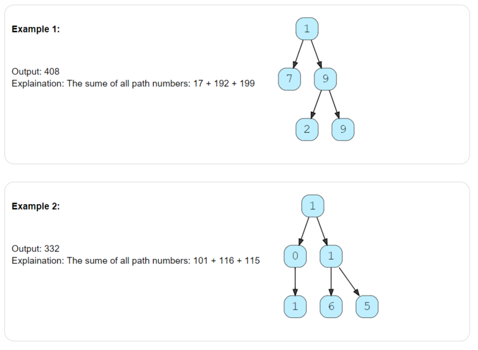
code:
int findRootToLeafPathNumbers(TreeNode *currentNode, int pathSum) {
if (currentNode == NULL) {
return 0;
}
pathSum = 10 * pathSum + currentNode->val;
if (currentNode->left == NULL && currentNode->right == NULL) {
return pathSum;
}
return findRootToLeafPathNumbers(currentNode->left, pathSum) +
findRootToLeafPathNumbers(currentNode->right, pathSum);
}
int findSumOfPathNUmbers(TreeNode *root) {
return findRootToLeafPathNumbers(root, 0);
}
Time Complexity : O(N)
Space Complexity : O(N)
5、path with given sequence
给定二叉树和序列，序列代表从根到叶子节点的路径，判断序列代表的路径是否在树上
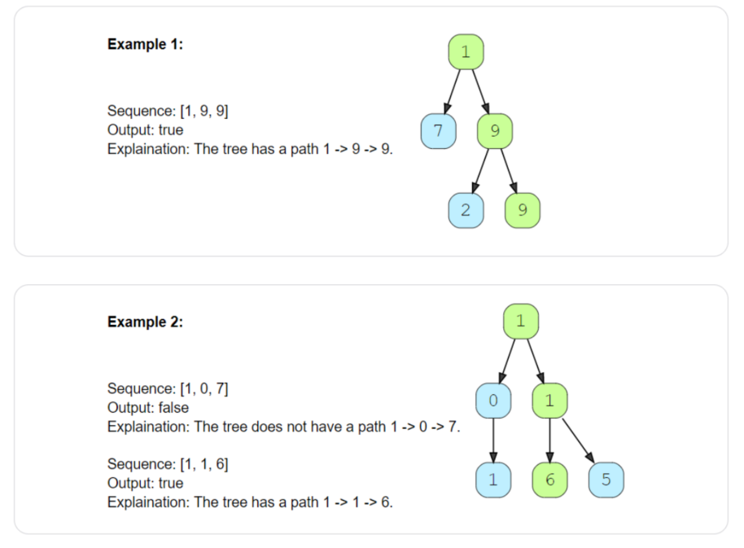
code:
bool findPathRecursive(TreeNode *currentNode, const vector<int> &sequence, int sequenceIndex) {
if (currentNode == NULL) {
return false;
}
if (sequenceIndex >= sequence.size() || currentNode->val != sequence[sequenceIndex]) {
return false;
}
if (currentNode->left == NULL && currentNode->right == NULL && sequenceIndex == sequence.size() - 1) {
return true;
}
return findPathRecursive(currentNode->left, sequence, sequenceIndex + 1) ||
findPathRecursive(currentNode->right, sequence, sequenceIndex + 1);
}
bool findPath(TreeNode *root, const vector<int> &sequence) {
if (root == NULL) {
return sequence.empty();
}
return findPathRecursive(root, sequence, 0);
}
Time Complexity : O(N)
Space Complexity : O(N)
6、tree diameter
给定二叉树，求其diameter(直径)：两叶子结点之间的最长路径。最长直径可能不经过根节点。
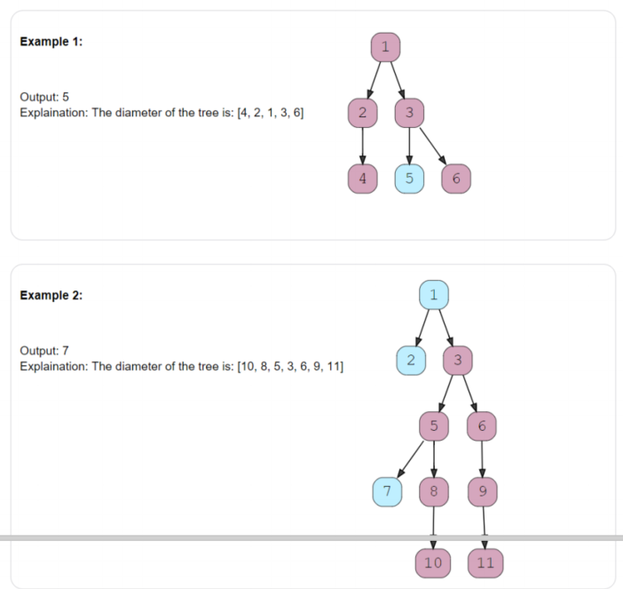
code:
int calculateHeight(TreeNode *currentNode, int &treeDiameter) {
if (currentNode == NULL) {
return 0;
}
int leftTreeHeight = calculateHeight(currentNode->left, treeDiameter);
int rightTreeHeight = calculateHeight(currentNode->right, treeDiameter);
//currentNode的直径是左子树的高度+右子树的高度+1
int diameter = leftTreeHeight + rightTreeHeight + 1;
//更新整个树的最大直径
treeDiameter = max(treeDiameter, diameter);
return max(leftTreeHeight, rightTreeHeight) + 1;
}
int findDiameter(TreeNode *root) {
int treeDiameter = 0;
calculateHeight(root, treeDiameter);
return treeDiameter;
}
Time Complexity : O(N)
Space Complexity : O(N)
7、path with max sum
给定二叉树， 求任意两节点之间路径的最大和，不必经过根节点
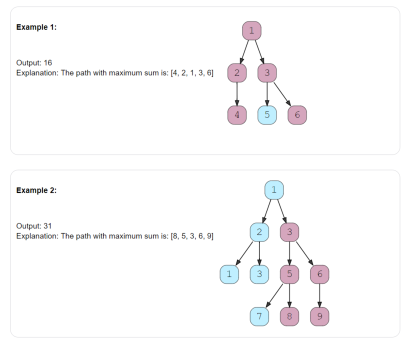
code:
int findMaximumPathSumRecursive(TreeNode *currentNode, int &globalMaximumSum) {
if (currentNode == NULL) {
return 0;
}
int maxPathSumFromLeft = findMaximumPathSumRecursive(currentNode->left, globalMaximumSum);
int maxPathSumFromRight = findMaximumPathSumRecursive(currentNode->right, globalMaximumSum);
//忽略sum=0 的path
maxPathSumFromLeft = max(maxPathSumFromLeft, 0);
maxPathSumFromRight = max(maxPathSumFromRight, 0);
//当前节点的maximumPathSum
int localMaximumSum = maxPathSumFromLeft + maxPathSumFromRight + currentNode->val;
//更新全局maximum Sum
globalMaximumSum = max(globalMaximumSum, localMaximumSum);
//经过当前节点所有路径中最大的Sum
return max(maxPathSumFromLeft, maxPathSumFromRight) + currentNode->val;
}
int findMaximumPathSum(TreeNode *root) {
int globalMaximum = INT_MIN;
findMaximumPathSumRecursive(root, globalMaximum);
return globalMaximum;
}
Time Complexity : O(N)
Space Complexity : O(N)
{kind=link}